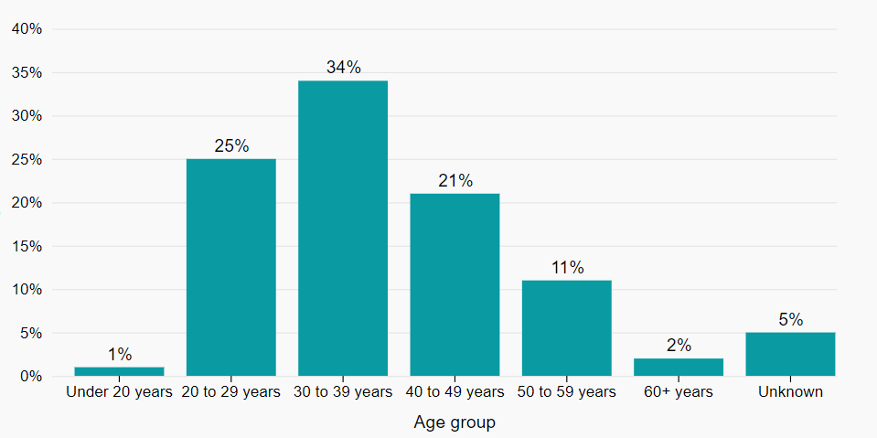

Manuel de conception de l'Infobase Santé
Table des matières
Design
Sur cette page
Une partie de Canada.ca
L'Infobase Santé fait partie de l'écosystème Canada.ca - c'est une partie de la présence en ligne du gouvernement du Canada. En tant que tel, la conception globale des produits de données doit respecter les éléments obligatoires du Système de conception de Canada.ca. Vous devez également suivre la Guide de rédaction du contenu du site Canada.ca.
De plus, lorsque cela est possible et approprié, il est bon d'utiliser des motifs du système de design Canada.ca
- Système de comception Canada.ca
- Guide de rédaction du contenu du site Canada.ca
- Bibliothèque de modèles Canada.ca
Cependant, le système de conception Canada.ca laisse de la place à la créativité (à condition que les éléments de la marque Canada.ca soient respectés). En fin de compte, l'utilisabilité est plus importante que la conformité : le plus important est de concevoir un produit de données qui aidera les gens à accomplir leurs tâches.
Couleurs
Sélectionnez toujours les couleurs de manière intentionnelle, avec soin.
Pourquoi utiliser des couleurs
En utilisant le bon schéma de couleur, vous pouvez aider les gens à comprendre rapidement votre visualisation.
Choisir une palette de couleurs
Considérez les éléments suivants lors du choix d'une palette de couleurs:
- les couleurs doivent être faciles à distinguer les unes des autres
- généralement, vous pouvez utiliser des couleurs chaudes pour les valeurs positives et des couleurs froides pour les valeurs négatives
- essayez de limiter le nombre de couleurs différentes dans votre visualisation
Différents types de palettes de couleurs peuvent être utilisés en fonction de l'objectif de la visualisation:
Qualitative
Utilisez une palette de couleurs qualitative pour des catégories distinctes qui n'ont pas de relation entre elles. Utilisez des couleurs complètement et clairement distinctes pour éviter de suggérer une relation entre les catégories.
Voici un exemple de palette de couleurs accessible:
Ces couleurs offrent suffisamment de contraste pour les personnes ayant des troubles visuels, et l'utilisation de couleurs distinctes et non liées entre elles facilite la distinction entre les différentes catégories ou groupes sur un graphique ou un graphique.
Séquentielle
Utilisez des palettes séquentielles pour montrer une progression de valeurs (de faible à élevé, par exemple, ou de mauvais à bon). Utilisez une séquence ordonnée de couleurs, de clair à foncé, ou de faible saturation à haute saturation.
Voici un exemple de palette de couleurs séquentielle accessible :
Ces couleurs offrent suffisamment de contraste pour les personnes ayant des troubles visuels, et la nature séquentielle de la palette (allant des couleurs claires aux couleurs foncées) facilite la distinction entre les différents points de données sur un graphique ou un graphique.
Divergente
Utilisez une palette de couleurs divergente lorsque vous voulez représenter des valeurs opposées ou contrastantes, de chaque côté d'une valeur moyenne ou neutre. Utilisez un dégradé qui passe d'une couleur à une autre, avec une couleur neutre au milieu. Par exemple, vous pourriez représenter des températures froides dans des nuances de bleu, des températures moyennes dans une couleur neutre, et des températures chaudes dans des nuances de rouge.
Voici un exemple de palette de couleurs divergentes accessible :
Ces couleurs offrent suffisamment de contraste pour les personnes ayant des troubles visuels, et la nature divergente de la palette (allant des couleurs fraîches aux couleurs chaudes) facilite la distinction entre les différents points de données sur un graphique ou un graphique.
Plus de renseignements sur les couleurs
- 7 Best Practices for Using Color in Data Visualizations | Sigma Computing (en anglais seulement)
- When to Use Sequential and Diverging Palettes (en anglais seulement)
- Color schemes types - Color Brewer (en anglais seulement)
Axes et étiquettes
Utilisez des étiquettes et des annotations pour expliquer les points de données et fournir un contexte aux utilisateurs.
Suivez ces recommandations:
- si possible, incluez l'étiquette directement avec la ligne ou la barre, plutôt que sur l'axe
- évitez d'utiliser le jargon et les acronymes, sauf si vous êtes absolument sûr qu'ils sont compris par votre public cible
- les étiquettes devraient être horizontales (et non verticales ou diagonales). Voir alternatives to diagonal axis labels — storytelling with data (en anglais seulement)
- commencez l'axe à 0 dans les graphiques à barres. Dans les graphiques en courbes, il est possible de couper l'axe pour mieux montrer la tendance
- les repères sur l'axe ne sont pas toujours nécessaires
Grilles
Ne surchargez pas le graphique avec des lignes de grille complètes.
En général, incluez uniquement des grilles horizontales et créez-les en gris clair.
Par exemple:
Accessibilité
L'accessibilité n'est pas facultative. Tous les produits de l'Infobase doivent être accessibles.
Faire
- Fournir les renseignements clés à partir des données
- Utiliser des étiquettes et des légendes claires
- Fournir un tableau de données pour chaque visualisation
- Si la visualisation raconte une histoire, la transmettre également en utilisant des mots
- Utiliser des outils d'évaluation de l'accessibilité
- Utiliser un contraste approprié entre les éléments (utiliser des vérificateurs d'accessibilité tels que Contrast Checker - WebAIM - en anglais seulement)
- Considérer l'utilisation d'une palette adaptée au daltonisme
- Tester avec des personnes ayant des handicaps
Ne pas faire
- Se fier uniquement aux indices visuels (couleur ou forme) pour transmettre un sens
- Utiliser un faible contraste entre les éléments
- S'appuyer uniquement sur les interactions pour trouver les renseignements clés
- Laisser des cellules de tableau vides
- Utiliser le même ID plusieurs fois sur une page
- Date de modification :